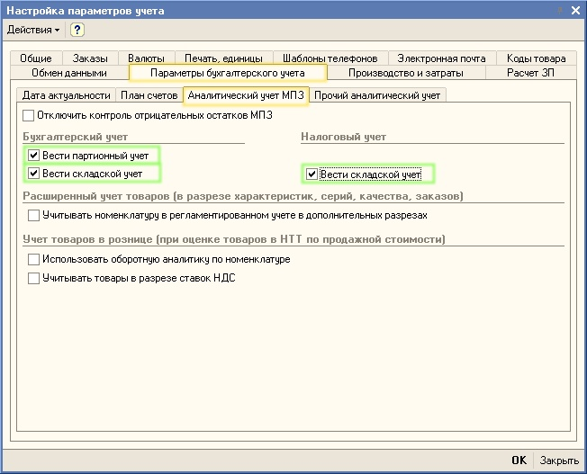
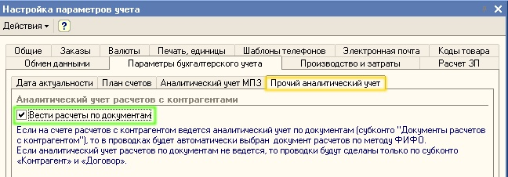
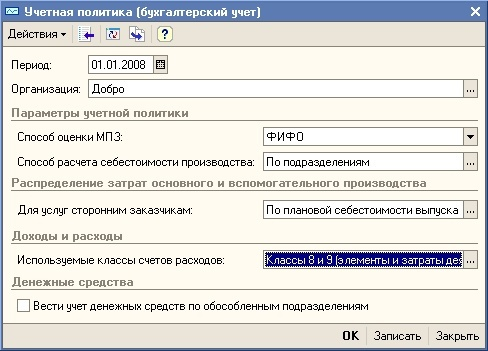
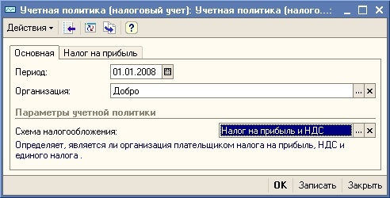

Установка параметров учетной политики для бухгалтерского и налогового учета
- Для начала работы в программе необходимо настроить параметры аналитического учета материально-производственных запасов (МПЗ). Для этого выберите в меню Сервис пункт Настройка учета - Настройка параметров учета.
- В открывшейся форме Настройка параметров учета перейдите на закладку Параметры бухгалтерского учета. На закладке Аналитический учет МПЗ установите флажки Вести складской учет для бухгалтерского и налогового учета так, как показано на рисунке:

- На закладке Прочий Аналитический учет установите флажокки Вести расчеты по документам

ВАЖНО!
По умолчанию в программе не установлены указанные в форме настройки параметров аналитического учета МПЗ в бухгалтерском и налоговом учетах. Если в программе предполагается вести учет материально-производственных запасов в бухгалтерском и налоговом учетах, например, в разрезе складов, то на закладке Аналитический учет МПЗ нужно установить флажок Вести складской учет. При выполнении такой настройки на счета 20 «Материалы», 28 «Товары» и другие счета, предусматривающие аналитический учет по субконто «Номенклатура», будет добавлено субконто «Склады».
ПРИМЕЧАНИЕ
Субконто в программе «1С:Управление торговым предприятием для Украины» — это объект аналитического учета («Номенклатура», «Склады», «Контрагенты» и т.д.). Под видом субконто понимается множество однотипных объектов аналитического учета, из которого выбирается объект (например, справочник «Номенклатура»).
- Для ввода параметров учетной политики организации по бухгалтерскому учету выберите в меню Сервис пункт Настройка учета, а в нем подпункт Учетная политика (бухгалтерский учет). Для добавления новой записи об учетной политике нажмите кнопку
 (или клавишу Insert или выберите меню Действия — Добавить). В открывшемся окне заполните параметры учетной политики бухгалтерского учета так, как показано на рисунке:
(или клавишу Insert или выберите меню Действия — Добавить). В открывшемся окне заполните параметры учетной политики бухгалтерского учета так, как показано на рисунке:

- Нажмите кнопку ОК для сохранения сведений об учетной политике бухгалтерского учета и закрытия формы Учетная политика (бухгалтерский учет).
- Для ввода параметров учетной политики организации по налоговому учету выберите в меню Сервис пункт Настройка учета, а в нем подпункт Учетная политика (Налоговый учет). Для добавления новой записи об учетной политике нажмите кнопку (или клавишу Insert или выберите меню Действия — Добавить). В открывшемся окне заполните параметры учетной политики бухгалтерского учета так, как показано на рисунке:

- Нажмите кнопку ОК для сохранения сведений об учетной политике бухгалтерского учета и закрытия формы Учетная политика (налоговый учет).
ПРИМЕЧАНИЕ
В поле Период указывается дата, начиная с которой применяется данная учетная политика. Если учетная политика организации изменится, необходимо ввести новую запись в регистр сведений Учетная политика (бухгалтерский/налоговый учет) и установить в поле Период дату, с которой действует новый порядок налогового учета.
ВАЖНО!
Учетная политика бухгалтерского учета настраивается отдельно для каждой организации, входящей в состав торгового предприятия. В списке Учетная политика (бухгалтерский/налоговый учет) должны быть заполнены отдельные записи для каждой организации, входящей в состав торгового предприятия.
Следующий раздел: «Заполнение сведений о деловых партнерах торгового предприятия»